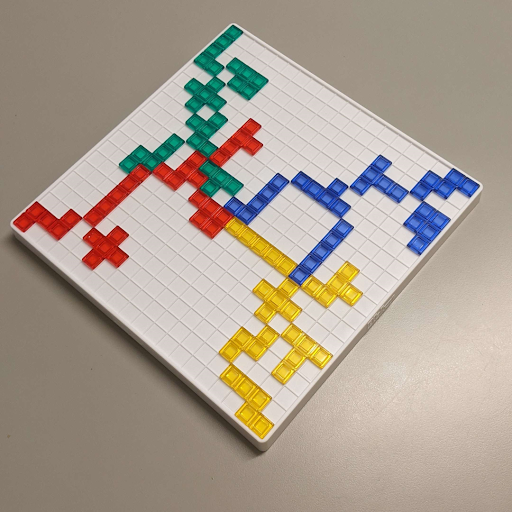
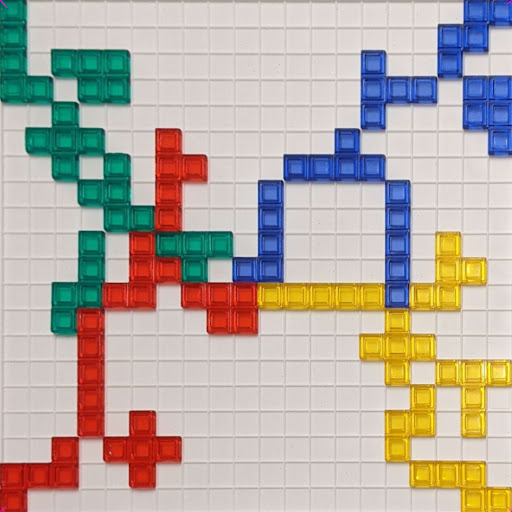
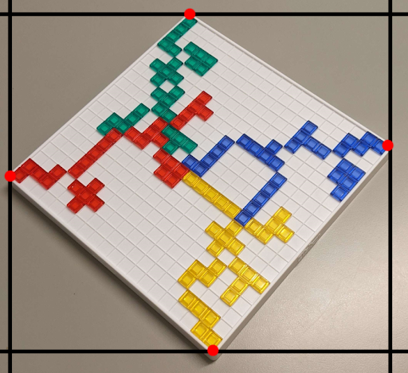
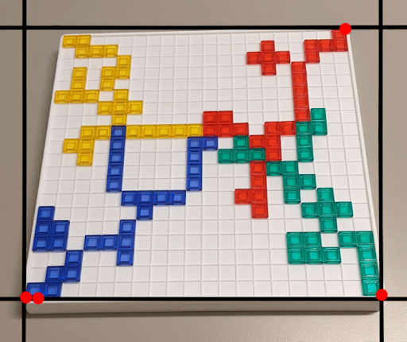
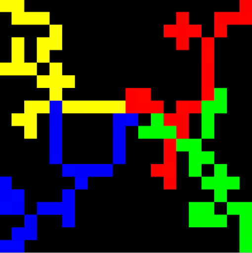
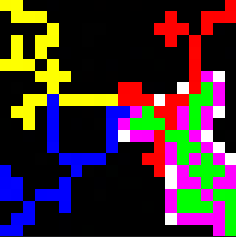
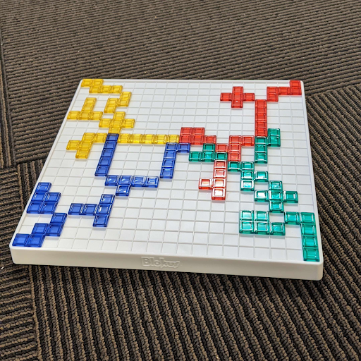
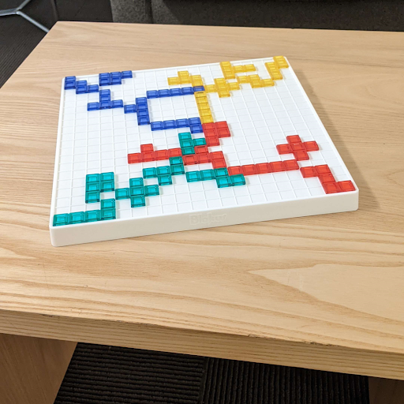

March 14, 2023
In this project, we are making a move detector for the board game Blokus. All of the developers of this project love this game and we frequently play it with our friends, and the game usually gets pretty heated. In this game, two to four players must try fitting as many of their own 21 colored pieces on a gridded square board where each piece must touch another of the same color but only at the corners. Each piece is made up of one to five squares. As more pieces get added to the board, it becomes increasingly more difficult to find room to place certain pieces. So in order to help us make our best judgments in an intense game, we plan to make a program that can give players all of the places on the board they could place a certain piece on the board when given pictures of the current state of the board and what piece they want to play. This program will not suggest “winning” moves, but rather all possible moves. In order to achieve this goal, we broke up the program into two main components: the piece recognition model and the move option visualizer. The piece recognition model takes an image of a Blokus piece of the player’s choice and outputs the color and the type of the piece. The move option visualizer takes an image of the state of the board, turns it into a bird’s eye view digital representation, and when given a piece color and type, shows where this piece can be put on the board.
The only previous work that the recognition model relies on is that it builds on top of the ResNet50 model by microsoft. A version pre-trained on ImageNet is used. OpenCV was used for color detection on pieces and some dataset processing attempts.
We used the image processing library that we implemented throughout the class to allow us to save and load images, access the pixel data of said images, and apply filters to them.
Using the Resnet50 model, we replace the final layer to represent all the possible pieces available to a player in Blokus (image above). Then using a dataset of all the pieces, we randomly split them into training, validation, and test sets with a 70:15:15 distribution.
We train by using the training set to represent the loss function, determining the direction the model goes into terms of weights. At the same time we keep track of the best weights the model attains by comparing the accuracy of the weights according to the validation set. At the very end of training, we then pick the best weights we saw.
Training was done hyperparameters:
Yellow: Validation Set Accuracy
Blue: Training Set Loss
Depending on the training set created, we have an accuracy rate of 72% - 98%
Detecting the state of the board was a more difficult challenge than we originally imagined. Our basic idea was to find the four corners of the board, then project the corners of the board to the corners of the image, making the board fill up the whole image, and then since we know the dimensions of the board, and we know the size of the image, we can find each cell of the board and determine which color it is by checking the center pixel’s hue.
Input:Goal:
In Blokus, the first 4 pieces must be played in the 4 corners of the board, and we took advantage of that fact to find the corners of the board. Our idea was to get the leftmost, rightmost, topmost, and bottommost pixels in the image above a certain saturation threshold (0.6 in our case), and consider those the 4 corners.
This approach worked perfectly if the board in the image was diagonal since the 4 corners would be the leftmost, rightmost, topmost, and bottommost saturated pixels, but if the board was viewed head-on in the image, this approach would not work. (notice how in the right image, the yellow corner is not detected since the blue corner is detected as the bottom-most and leftmost pixel)

The solution was to run the algorithm, then rotate the image by 45 degrees, and run it again. Doing that ensures that one of the 2 images will be rotated in a way that works for our algorithm. Now that we have the corners, we can stretch the board to fill the whole image, poll each grid cell for its color, and construct a model of the board. We then filter out all the squares where it is illegal to place a piece (the squares that border your color, in this example green) by turning them pink, and then find any black squares which share a corner with your color and turn them white, signifying they are valid corners you can play from.

The final step is to try to find which of the white corners a specific piece can be played on. For this, an image of every orientation of every piece was created. (There are 91 piece orientations possible. These are the images for the possible orientations of the F piece. )
Then, for each orientation image, we would loop it over the board, and check every pixel in the piece to see what it is overlapping. If it overlaps at least one white square, and no colored squares, the piece fits there, and we mark the corner. Once all orientations of the piece have been exhausted, we show the valid corners to the user.
This operated as the coupler between these two min-projects. The user interface handles collecting information from the user (board image, piece images) and initializes the piece recognition model to guess the piece. It also uses OpenCV in the background to determine the color of the piece it is examining. After inputs are correctly determined, the move option visualizer is booted up and a result is returned to the user.
Using our own Blokus set, we took pictures of one set of pieces (green set). Since a Blokus can be placed in four different rotations (0, 90, 180, and 270 degrees) along with being mirrored, we took pictures of pieces in all arrangements (mirror only be necessary for specific pieces).
When used for training, the images are processed through the same transformations that ResNet50 is trained with. Luckily color is removed through this process so the model should be generalizable in terms of color.
For the board state detection part of the project, a random Blokus game was played up through the first 7 or 8 moves for each player, and then pictures of the board were taken from different angles and with different backgrounds. For each of the 3 backgrounds, 3 different angles were used for a total of 9 images. The pictures were then cropped to be square 1080 x 1080 images, and then used to test the algorithm.
 
As mentioned above, we were able to achieve around 72% to 98% test accuracy with our piece recognition machine learning model, which provides satisfying accuracy when used in game. We were able to mediate the inaccuracy by prompting the user to verify if the recognized piece type is what the user is expecting, if it’s not what the user expects, we ask the user to input the type of the piece. This guarantees that the piece being fed into the move opinion visualizer is correct. The other part of piece recognition is color recognition. In our testing, the color of the piece is consistently accurately recognized with our current threshold boundaries for each color (red, green, yellow, blue).
For the move options visualizer, saturated colors in the background, images taken from a very shallow angle, and excess glare on the pieces were able to throw off the algorithm. When the board was on a plain, unsaturated surface, we were able to completely visualize the board state and transfer the image into a digital visualization, regardless of the orientation of the board in the image. We were also able to recognize and separate colors of each piece on the board and visualize them in the digital representation too. This allows us to, with the information of which piece type and color that a player plans to put down, show the player all possible options on the board where they can put this piece in their next move.
The natural next step for this project would be to create an easily usable application for the program. Currently the image has to be imported into the computer and the program has to be run on a computer, but this is not really easy to use which can deter casual Blokus players. It then makes sense to put our program into an app on the phone so the player can just point their phone’s camera at the board and get a visualization of all possible moves for a given piece. This should help attract and convince more people to use the program when they play the game, including ourselves.
Another possible next step for this project would be to use a neural network to “solve” the game and create an AI that can suggest the optimal move given the board state. In this case we don’t need any separate pictures of the pieces that haven't been put on the board yet, but instead we can just detect what pieces have already been put down on the board for a certain color and thus know which piece types haven't been put on the board yet. This information can then help the AI decide which piece to use next and where that piece should be put in order to maximize the chance of winning the game.